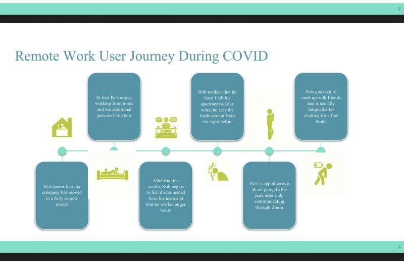
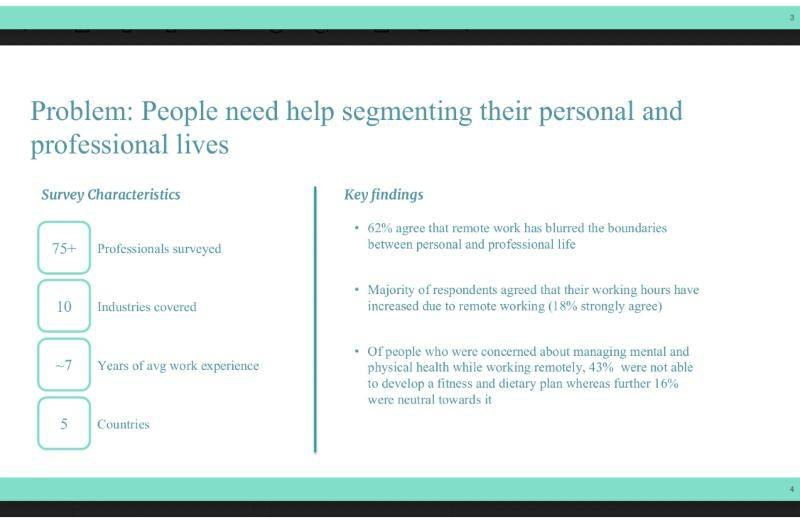
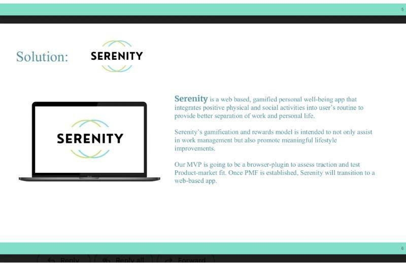
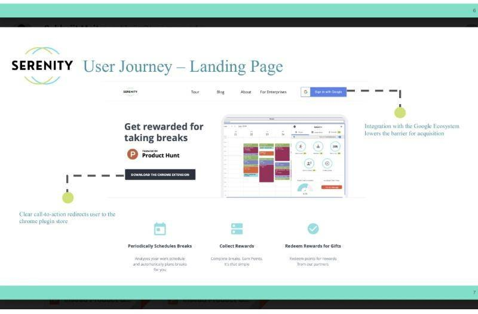
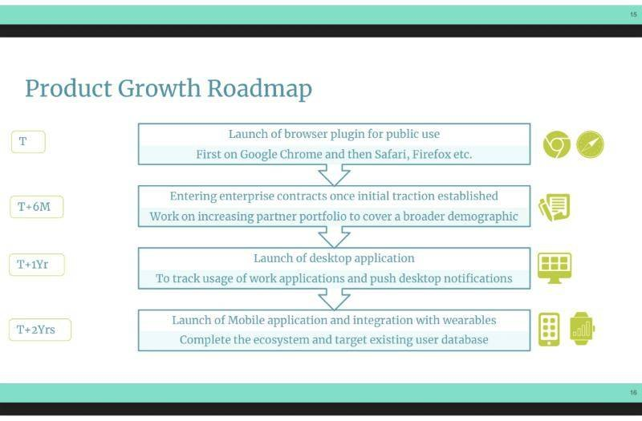
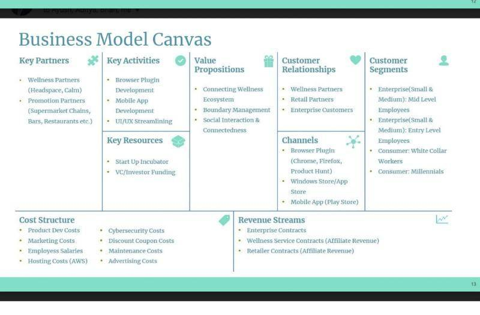
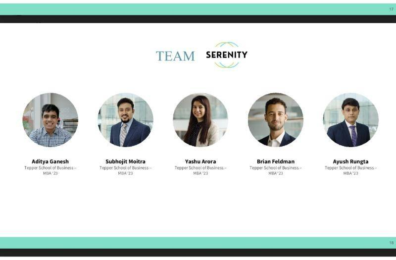

New product development
INSEAD Product Games
Situation
In this case competition we had to create a solution that would make remote work more immersive. We worked in a team of five and ran primary and secondary research to find the most critical issues employees face while working from home.
Serenity: solution components






